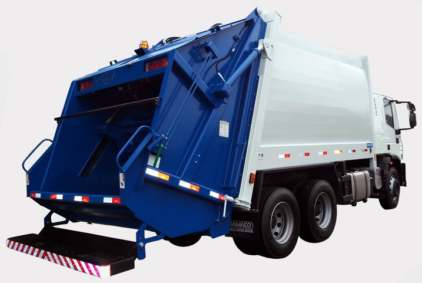
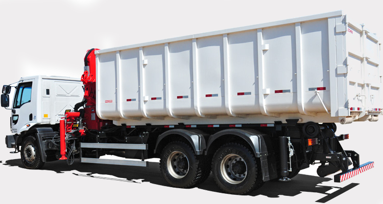
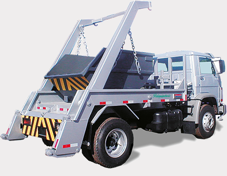
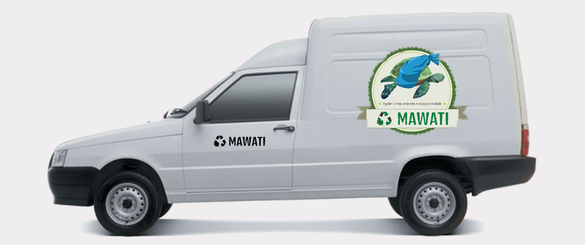

Consultoria
Enviamos um profissional à sua empresa — sem custo — para avaliar os resíduos gerados e propor a solução de melhor custo-benefício, com coleta seletiva e descarte adequado.
Agendar visitaColetamos, separamos e destinamos corretamente resíduos industriais, recicláveis e de construção civil — com responsabilidade ambiental e total conformidade legal.
Da consultoria à destinação final — cuidamos de todo o ciclo para que sua empresa opere em dia com a legislação e com o meio ambiente.
Enviamos um profissional à sua empresa — sem custo — para avaliar os resíduos gerados e propor a solução de melhor custo-benefício, com coleta seletiva e descarte adequado.
Agendar visitaGerenciamos todo o ciclo: coleta, separação, reciclagem ou descarte adequado — sempre com a emissão do CTR e destinação para o local mais apropriado.
Ver resíduos atendidosCaçambas estacionárias de 5m³ para empresas e pessoas físicas, com agendamento de entrega e retirada conforme a sua necessidade.
Consultar prazos e valoresAtendemos praticamente qualquer tipo de refugo, sempre encaminhando ao destino mais adequado. Não encontrou o seu? Fale conosco.
Veículos adequados a cada volume e categoria de resíduo, garantindo agilidade e segurança no transporte.

Carroceria compactadora com capacidade volumétrica de 1,2 m³, própria para a coleta de resíduos orgânicos.

Sistema roll-on roll-off com capacidade volumétrica de 26 m³, ideal para grandes volumes.

Equipado com poliguindaste e caçamba estacionária de 5 m³ — perfeito para entrega e retirada de caçambas.

Destinado a pequenas coletas, com capacidade de carga de até 600 kg.
Fundada em 2002 com a missão de ajudar o meio ambiente por meio do descarte correto de resíduos industriais, a Mawati realiza a coleta, a compra e a venda de materiais recicláveis.
Para aprimorar continuamente o nosso trabalho, investimos em pesquisa sobre o reaproveitamento de resíduos e firmamos parcerias com aterros sanitários, incineradores, aterros industriais e empresas de reciclagem, contando com profissionais especializados na análise do resíduo industrial.
Nossa equipe de consultoria orienta cada empresa sobre o tipo de resíduo gerado, os impactos do descarte indevido e a importância da coleta seletiva. O compromisso da Mawati é com o meio ambiente: atender, explicar, descartar corretamente e reciclar tudo o que for possível.
Atender nossos clientes da melhor forma possível, proporcionando segurança e satisfação por meio de um serviço que preserva e conserva o meio ambiente.
Contribuir para o aumento da qualidade de vida da sociedade e das empresas, preservando o meio ambiente.
Foco no meio ambiente como base de um trabalho limpo e comprometido em fazer o certo pelo planeta, com qualidade no atendimento e na consultoria.
Quem contrata o transporte de resíduos é corresponsável pela sua destinação. Entenda o que exigir para manter sua empresa em conformidade.
Contrato da empresa transportadora que demonstre claramente a responsabilidade pela correta destinação do entulho em áreas licenciadas de transbordo e triagem ou em aterros licenciados de resíduos da construção.
Uma via do Controle de Transporte de Resíduo (CTR) — documento que comprova a entrega do entulho em área licenciada. Agindo assim, o gerador colabora com uma cidade mais limpa e evita ser responsabilizado pela deposição irregular de resíduos.
A política de gestão dos resíduos da construção civil da Prefeitura de São Paulo é implementada pelo Plano Municipal de Gestão Sustentável de Entulho, atendendo às diretrizes federais da Resolução nº 307/2002 do CONAMA (Conselho Nacional do Meio Ambiente).
O plano amplia a oferta de áreas para deposição regular dos resíduos da construção e demolição — de pequenos a grandes geradores — e incentiva a reciclagem desses materiais. Pela resolução, as construtoras devem adotar programas de gestão de resíduos e apresentá-los à Prefeitura no licenciamento de obras.
As competências de fiscalização das posturas municipais seguem a Lei nº 13.478/02 e o Decreto nº 42.238/02. Entre os pontos fiscalizados pela LIMPURB estão:
Normas relacionadas: Portaria nº 18/SES/05; Decreto 46.594/2005 (coleta, transporte, tratamento e disposição final de resíduos inertes); Lei 13.298/2002 (responsabilidade do gerador e do transportador de resíduos da construção civil); Decreto 42.217/2002 (licenciamento e operação de áreas de transbordo e triagem — ATT).
Mais informações: site da LIMPURB · LIMPURB: 0800 727 0211 / (11) 3397-1723 · Central de Atendimento 156.
Estamos prontos para encontrar a melhor solução de gestão de resíduos para a sua empresa.